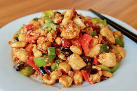

Gongbao Chicken Recipe

Gong Bao Chicken, also known as Kung Pao Chicken, is a classic Chinese dish that originated in the Sichuan province. It is a flavorful and slightly spicy stir-fry dish that typically includes chicken, peanuts, and vegetables.
Here's a basic recipe for Gong Bao Chicken
Ingredients:
- 500g boneles, skinless chicken breasts or thighs, cut bit-sized cubes
- 1/2 cup unsalted peanuts
- 1 red bell pepper, diced
- 1 green bell pepper, diced
- 3 green onions, chopped
- 3 cloves garlic, minced
- 1-inch piece of ginger, minced
- 2 tablespoons vegetable oil
For Marinade:
- 2 tablespoons soy sauce
- 1 tablespoon rice wine or dry sherry
- 1 tablespoon cornstarch
For the Sauce
2 tablespoons soy sauce
- 1 tablespoon hoisin sauce
- 1 tablespoon rice vinegar
- 1 tablespoon sugar
- 1 teaspoon sesame oil
For the Stir-fry:
- In a bowl, mix the chicken with the marinade ingredients (soy sauce, rice wine or sherry, cornstarch) and let it marinate for about 15-20 minutes.
- In a small bowl, whisk together the sauce ingredients (soy sauce, hoisin sauce, rice vinegar, sugar, sesame oil) and set aside.
- Heat 1 tablespoon of vegetable oil in a wok or large skillet over medium-high heat.
- Add the marinated chicken to the hot wok and stir-fry until it's cooked through and slightly browned. Remove the chicken from the wok and set it aside.
- In the same wok, add another tablespoon of oil if needed. Add the minced garlic and ginger, and stir-fry for about 30 seconds until fragrant.
- Add the diced bell peppers and stir-fry for another 2-3 minutes until they are slightly softened.
- Add the cooked chicken back into the wok, along with the peanuts and chopped green onions.
- Pour the sauce over the chicken and vegetables, and toss everything together until well-coated and heated through.
- Serve the Gong Bao Chicken over steamed rice and garnish with additional chopped green onions or peanuts if desired.